관리자 홈. 기간 필터·활동 필터·검색·뷰(타임라인/리스트). 인기 시나리오 기간·정렬(views/simulationCount). 최근 활동, 기관·주문 요약, 카드/링크 클릭 → 해당 상세.
경로
/admin/dashboard
사용자 행동
기간/필터/검색/뷰 전환, 인기 시나리오 기간·정렬, 카드 클릭
표시
recentActivities, 인기 시나리오 차트, 기관/주문 요약
3. API 명세
GET /dashboard/admin — startDate, endDate, activeFilter, popularScenarioPeriod(1month|3months|6months|1year), popularScenarioSortBy(views|simulationCount). 응답: 활동 목록, 인기 시나리오 집계, 기관/주문 요약.
4. 비즈니스 규칙
기본 기간 예: 6개월 전 ~ 오늘. 인기 시나리오는 기간·정렬 기준에 따라 views 또는 simulationCount 집계.
5. 통계
인기 시나리오: 기간 내 views 또는 simulationCount. 기관 수, 주문 금액 등 요약.
6. 연관 API · 플로우
1 대시보드 API 호출
2 링크 → 기관 상세, 시나리오 상세 등
Admin|기관고객 관리
1. 스크린샷
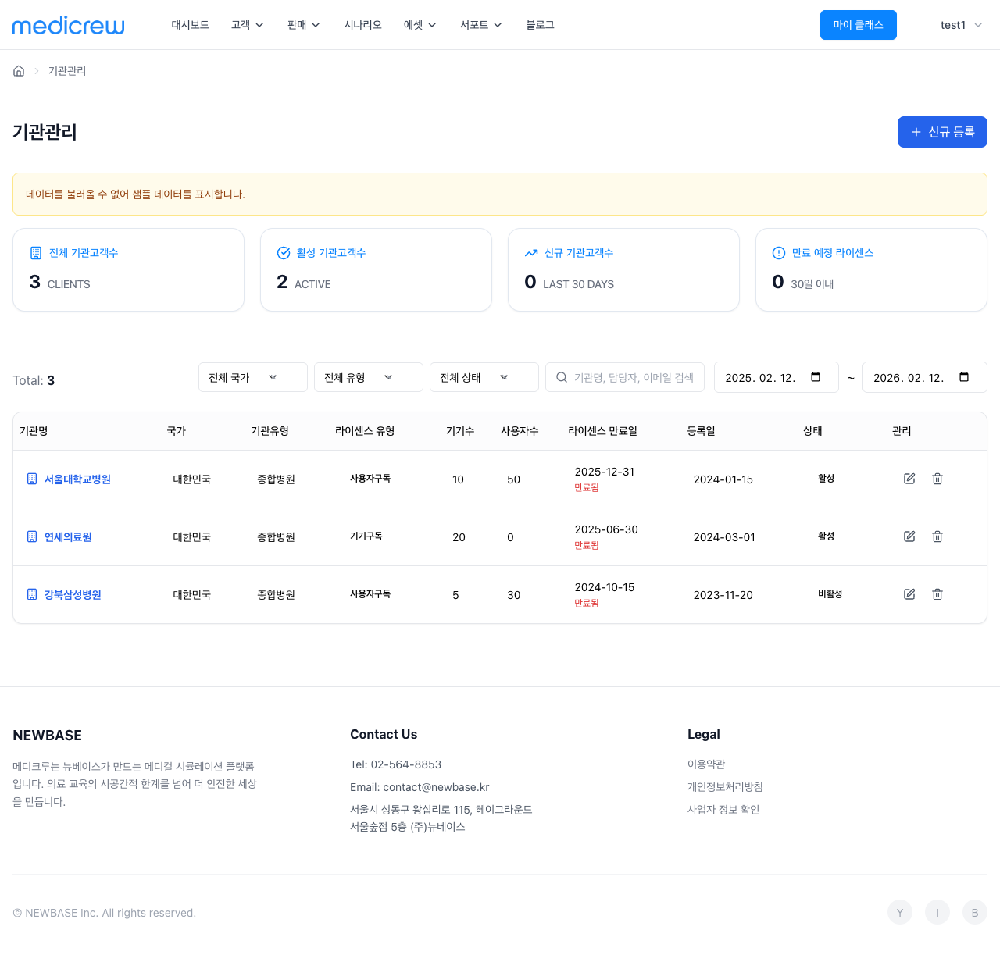기관고객 관리
2. 화면 요약
기관(고객) 목록. 통계 카드(전체/활성/신규/만료예정) 클릭 시 필터. 신규 등록·행 클릭 → 기관 상세·수정·삭제.
경로
/admin/organizations
테이블
기관명, 국가, 유형, 상태, 라이선스 유형/수, 디바이스/사용자 수, 등록일, 만료일, 관리
3. API 명세
GET /organization/list — page, pageSize, search, status, activeStatFilter(all|active|new|expiring), startDate, endDate. 응답: 목록 + totalCount, (선택) activeCount, newCount, expiringSoonCount.
4. 비즈니스 규칙
신규: 등록일이 오늘 기준 30일 이내.
만료 예정: 만료일이 오늘 ~ 30일 이내.
삭제 시 연관 데이터 정책(소프트 삭제 등) 정의.
5. 통계
항목
산출
전체 기관고객수
totalCount
활성
status === 'active' 건수
신규
등록일 30일 이내
만료 예정 라이선스
만료일 30일 이내
6. 연관 API · 플로우
1 기관 목록 API
2 신규 등록 → POST /organization
3 행 클릭 → GET /organization/{id} → 기관 상세
Admin|기관고객 상세
1. 스크린샷
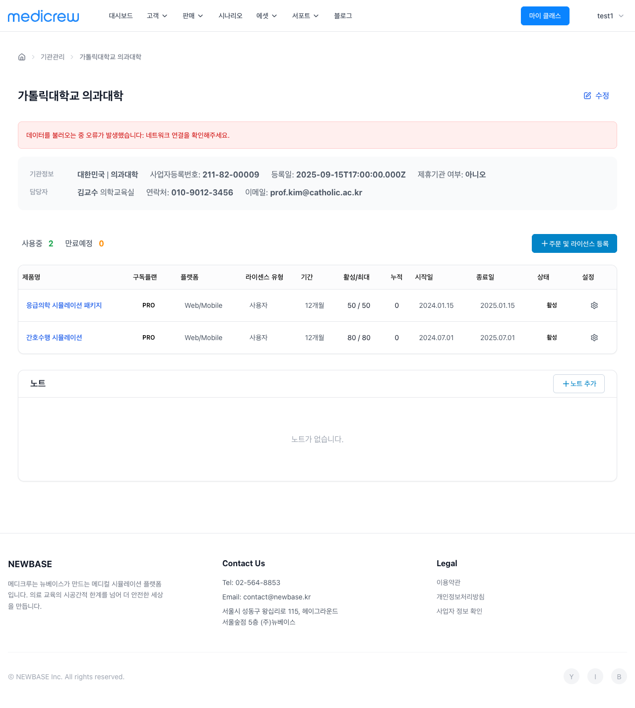기관고객 상세
2. 화면 요약
기관 하나의 상세. 기본 정보, 라이선스 목록, 노트. 수정·노트 추가·라이선스 행 클릭 → 라이선스 상세.
경로
/admin/organizations/:id
표시
기관 정보, 라이선스 목록(명, 유형, 수량, 기간, 상태), 노트 목록
3. API 명세
GET /organization/{id}, PUT /organization/{id}. 라이선스: GET /organization/{id}/licenses 또는 상세 응답에 포함. 노트: 목록/추가 API.
4. 비즈니스 규칙
Admin만 기관 전체 조회·수정. 라이선스 만료일·상태 갱신 규칙.
5. 통계
라이선스 수, 사용자 수 등 (상세 응답 또는 별도 집계).
6. 연관 API · 플로우
1 GET /organization/{id} + 라이선스/노트
2 수정 → PUT, 노트 추가 → POST 노트
Admin|클래스 관리
1. 스크린샷
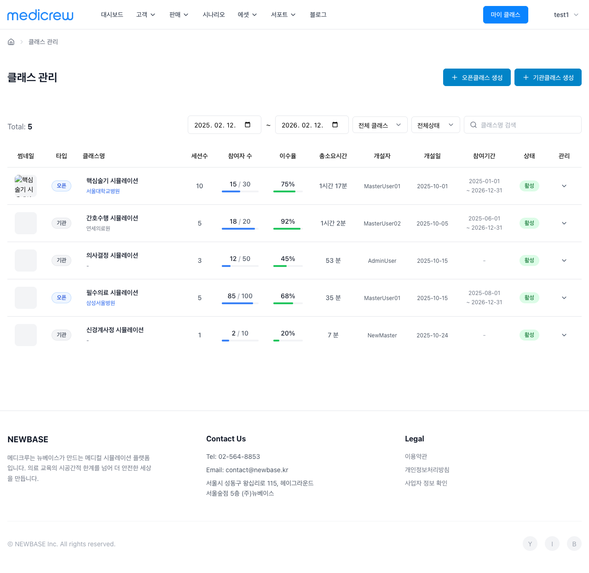클래스 관리
2. 화면 요약
전체 오픈/기관 클래스 목록. 검색·유형·활성·기간 필터. 오픈클래스/기관클래스 생성, 행 클릭 → 상세, 수정/삭제.
경로
/admin/class-management
테이블
유형, 클래스명, 기관명, 시나리오 수, 참가자, 이수율, 소요시간, 생성자, 생성일, 수강기간, 상태, 관리
Admin이 오픈클래스 생성. 프로덕트·수강기간·가격·할인·공개/비공개·커리큘럼 등 입력 후 저장.
경로
/admin/open-class/create
3. API 명세
POST /open-class (또는 프로덕트 기반 클래스 API). organizationId, productId, 수강기간, 가격, 할인, isPrivate 등.
4. 비즈니스 규칙
권한: 오픈클래스 개설은 Admin과 제휴기관 Master만 가능.
공개 시 참가비·할인 검증. 비공개 시 라이선스 설정. Admin은 모든 기관 대상 생성 가능(정책에 따름).
5. 통계
해당 화면 전용 통계 없음.
6. 연관 API · 플로우
1 프로덕트/기관 목록(선택)
2 POST 오픈클래스 → 클래스 관리 반영
Admin|오픈클래스 편집
1. 스크린샷
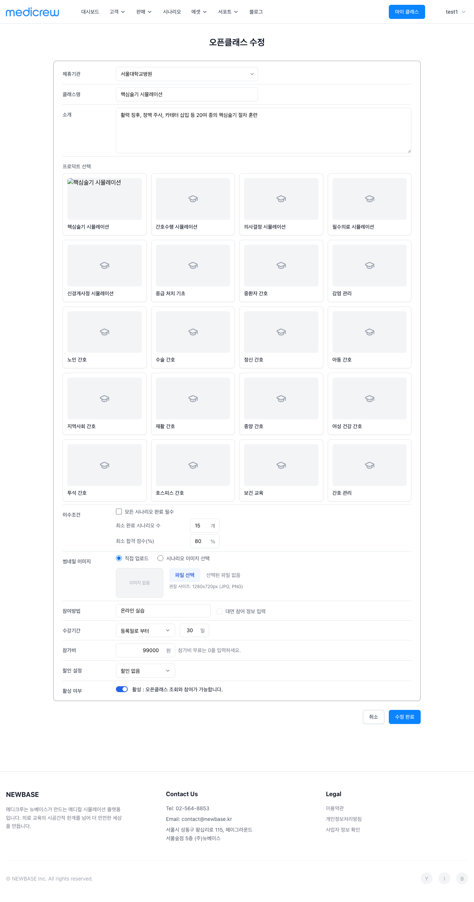오픈클래스 편집
2. 화면 요약
오픈클래스 하나 수정. GET 상세 후 필드 변경·저장.
경로
/admin/open-class/:id/edit 등
3. API 명세
GET /open-class/{id}, PUT /open-class/{id}.
4. 비즈니스 규칙
기존 오픈클래스 수정. 참가 중인 경우 수강기간·가격 변경 제한 등 정책.
5. 통계
해당 화면 전용 통계 없음.
6. 연관 API · 플로우
1 GET → 수정 → PUT → 클래스 관리
Admin|기관클래스 생성
1. 스크린샷
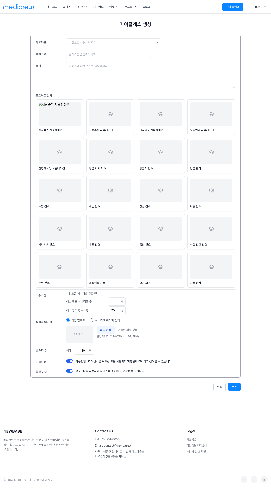기관클래스 생성
2. 화면 요약
기관 전용 클래스 생성. 기관·라이선스 선택, 제목·비공개·이수 조건·커리큘럼·수강기간 등.
경로
/admin/class/create
3. API 명세
POST /class — CreateClassRequestDto. Admin은 organizationId 지정 가능(기관 선택).
4. 비즈니스 규칙
선택 기관의 라이선스 범위 내. isPrivate 시 pw 필수.
5. 통계
해당 화면 전용 통계 없음.
6. 연관 API · 플로우
1 기관·라이선스·시나리오 목록
2 POST /class → 클래스 관리
Admin|기관클래스 편집
1. 스크린샷
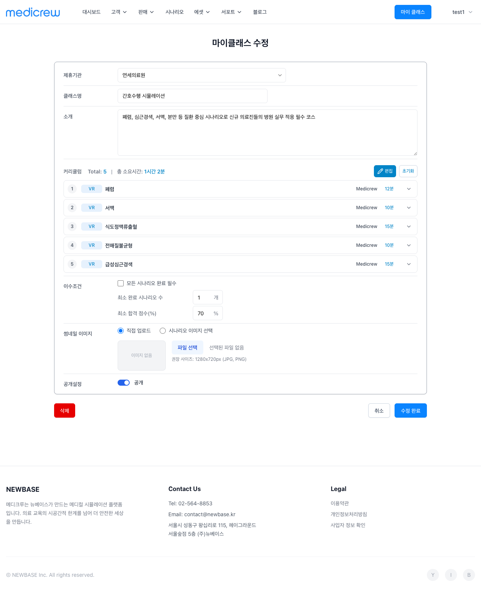기관클래스 편집
2. 화면 요약
기관클래스 하나 수정. GET 상세 후 제목·비공개·이수 조건·커리큘럼·수강기간 등 저장.
경로
/admin/class/edit/:id
3. API 명세
GET /class/{id}, PUT /class/{id}. UpdateClassRequestDto.
4. 비즈니스 규칙
기관 소유 클래스만. 참가 진행 중일 때 변경 제한 정책.
5. 통계
해당 화면 전용 통계 없음.
6. 연관 API · 플로우
1 GET → 수정 → PUT
Admin|프로덕트 관리
1. 스크린샷
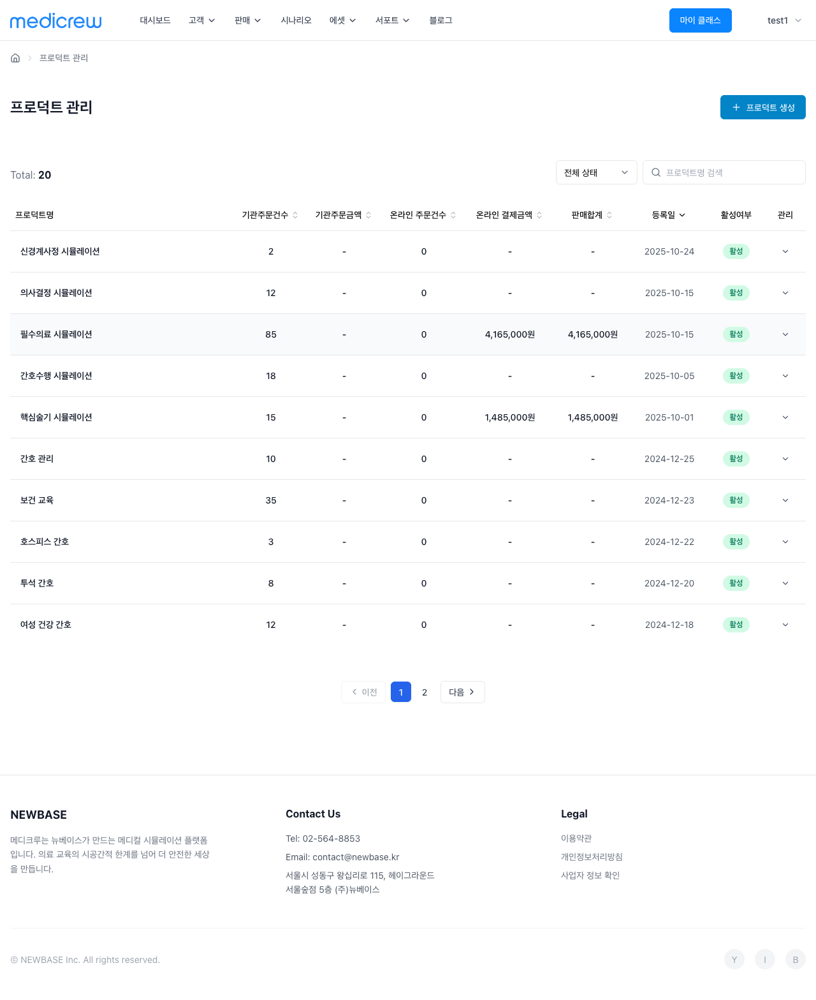프로덕트 관리
2. 화면 요약
전체 프로덕트 목록. 검색·활성 필터·정렬(주문건수·금액·판매합계 등). 생성·행 클릭 → 상세/편집.
경로
/admin/product-management
테이블
프로덕트명, 기관주문건수, 기관주문금액, 온라인 주문건수, 온라인 결제금액, 판매합계, 등록일, 활성여부, 관리
3. API 명세
GET /product/list — Admin은 organizationId 없이 전체 또는 필터. page, pageSize, searchTerm, isActive, sortBy, sortOrder.
4. 비즈니스 규칙
Admin은 모든 기관 프로덕트 조회·수정 가능(정책에 따름).
5. 통계
컬럼 값(주문건수·금액·판매합계) 및 정렬.
6. 연관 API · 플로우
1 프로덕트 목록
2 생성/상세/편집 API
Admin|프로덕트 생성
1. 스크린샷
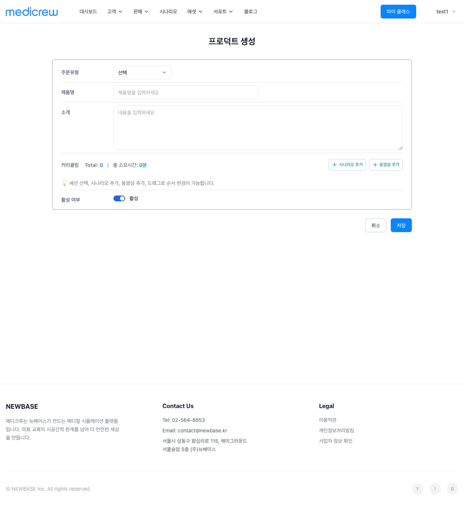프로덕트 생성
2. 화면 요약
프로덕트 생성. 기관 선택(Admin), 제목·설명·가격·커리큘럼 등.
경로
/admin/product/create
3. API 명세
POST /product. Admin은 organizationId 지정 가능.
4. 비즈니스 규칙
필수 필드·가격 검증.
5. 통계
해당 화면 전용 통계 없음.
6. 연관 API · 플로우
1 POST /product → 프로덕트 관리
Admin|프로덕트 상세
1. 스크린샷
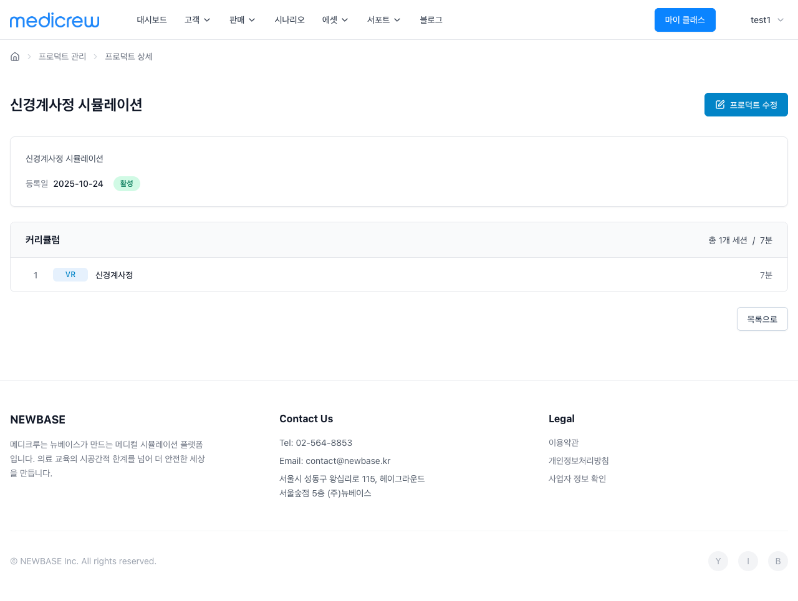프로덕트 상세
2. 화면 요약
프로덕트 하나 조회. 상세/편집 이동.
경로
/admin/product/detail/:id
3. API 명세
GET /product/{id}.
4. 비즈니스 규칙
Admin 전체 조회.
5. 통계
해당 화면 전용 통계 없음.
6. 연관 API · 플로우
1 GET /product/{id} → 편집 시 PUT
Admin|프로덕트 편집
1. 스크린샷
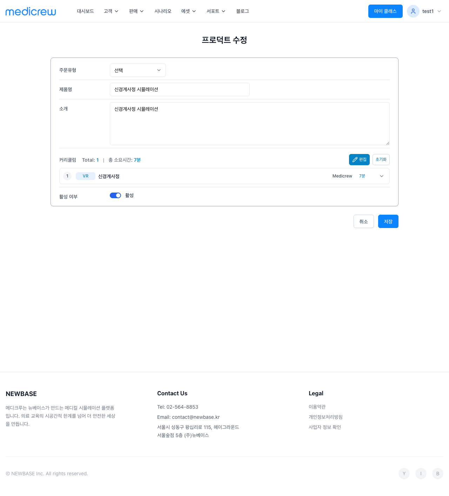프로덕트 편집
2. 화면 요약
프로덕트 수정. GET 후 필드 변경·저장.
경로
/admin/product/detail/:id 편집 모드
3. API 명세
GET /product/{id}, PUT /product/{id}.
4. 비즈니스 규칙
기존 프로덕트 수정.
5. 통계
해당 화면 전용 통계 없음.
6. 연관 API · 플로우
1 GET → 수정 → PUT
Admin|사용자 관리
1. 스크린샷
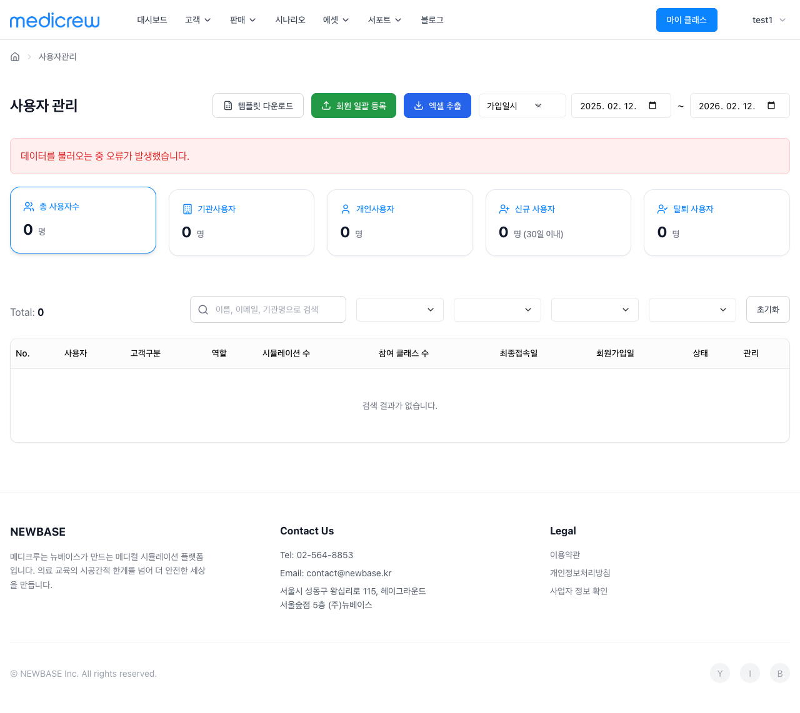사용자 관리
2. 화면 요약
전체 사용자 목록. 회원 일괄 등록(엑셀), 템플릿 다운로드, 엑셀 내보내기. 검색·고객유형·계정유형·역할·상태·날짜 필터. 통계 카드 클릭 시 필터. 수정(정보·비밀번호).
경로
/admin/users
테이블
로그인ID, 이름, 이메일, 고객유형, 기관명, 역할, 계정유형, 등록일, 최근 로그인, 상태, 수강 클래스 수, 시뮬레이션 수, 관리
3. API 명세
GET /user/list — page, pageSize, search(로그인ID/이름/이메일/기관명), customerType, accountType, role, status, dateFilterType, startDate, endDate. POST /user/bulk(엑셀 일괄), GET /user/template, GET /user/export. PUT /user/{id}, PUT /user/{id}/password.
에셋(이벤트, 증상, 태스크, 액션, 대화, 아이템 등) 목록·생성·수정·삭제. 각 타입별 목록·필터·검색·행 클릭 → 상세/편집.
경로
/admin/assets/* (이벤트/증상/태스크/액션/대화/아이템)
표시
타입별 컬럼(이름, 코드, 생성일, 수정일, 관리)
3. API 명세
에셋 타입별 CRUD. 예: GET/POST /asset/event, GET/POST /asset/symptom, GET/POST /asset/task 등. 또는 통합 GET /asset/list?type=event.
4. 비즈니스 규칙
Admin만 에셋 관리. 시나리오에서 참조 중인 에셋 삭제 제한 등 정책.
5. 통계
타입별 건수 등(화면에 있으면).
6. 연관 API · 플로우
1 에셋 타입별 목록 API
2 생성/수정/삭제 → 해당 CRUD API
Admin|설정
1. 스크린샷
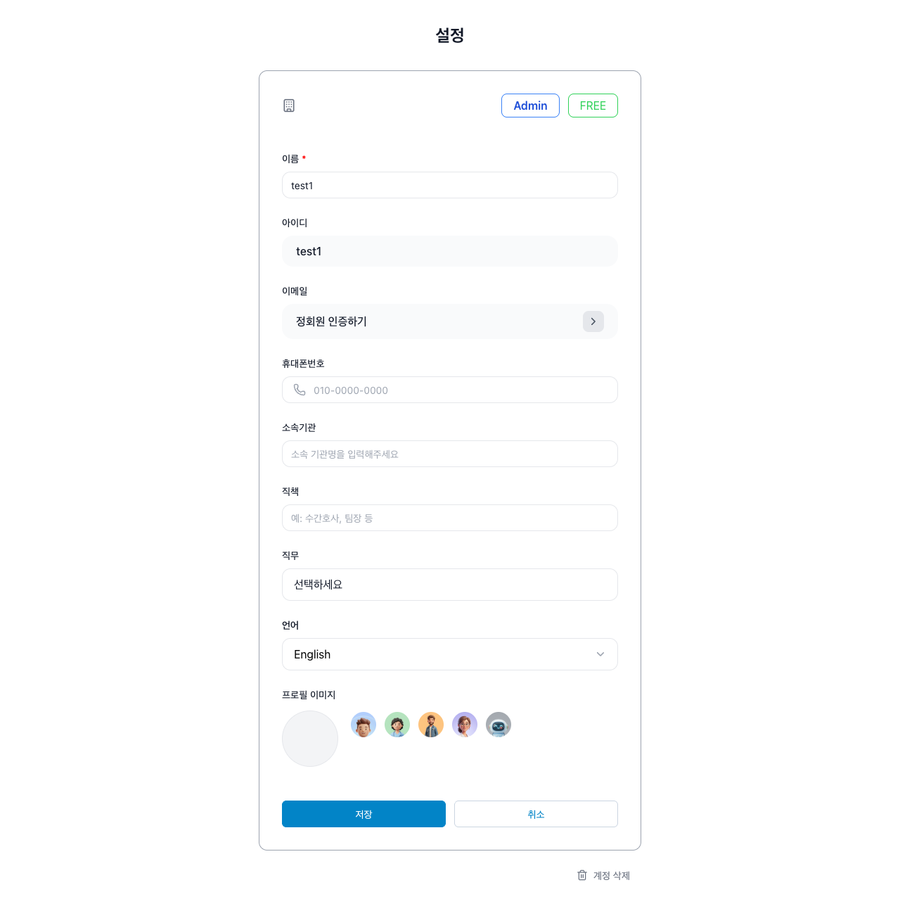설정
2. 화면 요약
Admin 본인 프로필·설정. 프로필 수정, 비밀번호 변경, 알림 설정 등. Student 설정과 동일 컴포넌트(Settings), 경로 /settings.
경로
/settings
3. API 명세
GET /user/profile, PATCH /user/profile. 비밀번호 변경·이메일 인증 등 계정 API.
4. 비즈니스 규칙
본인만 조회·수정.
5. 통계
해당 화면 전용 통계 없음.
6. 연관 API · 플로우
1 프로필 조회/수정 API
Admin|워크플로우
프로덕트 → 오픈클래스
※ 권한: Admin, 제휴기관 Master만 가능
flowchart TB
A[프로덕트 관리] --> B[프로덕트 생성]
B --> C[제목 가격 커리큘럼 입력]
C --> D[저장]
D --> E[클래스 관리]
E --> F[오픈클래스 생성]
F --> G[프로덕트 선택]
G --> H[수강기간 가격 설정]
H --> I[커리큘럼 편집]
I --> J[저장]
기관·주문 관리
flowchart TB
A[기관 관리] --> B[기관 상세]
B --> C[라이선스 노트 확인]
C --> D[주문 관리]
D --> E[주문 등록 또는 주문 상세]
주문 생성 유형별
flowchart TB
A[주문 등록] --> B[주문자 기관 검색 선택]
B --> C[유형 선택]
C --> D[구독 장비 오픈클래스 커스텀]
D --> E[품목 추가 유형별]
E --> F[통화 판매처]
F --> G[제출]
기관클래스 생성·편집
flowchart TB
A[클래스 관리] --> B[기관클래스 생성]
B --> C[기관 라이선스 선택]
C --> D[제목 비공개 이수조건]
D --> E[커리큘럼 시나리오 설정]
E --> F[수강기간]
F --> G[저장]